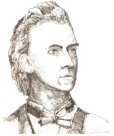

Frederic Chopin’in (1810-1849) toplanmış eserleri, amacı olan bir piyanist için gereken müziktir. Çağdaşlarının ustalıklı süslü sözlerinden mahrum olan besteleri, incelikten, güzellikten ve zevkten yoksun değillerdi. Kısaca Chopin, konser salonundan ziyade salon için sevilen bir besteciydi ve hayatı boyunca hiç kimse bu konuda onu geçemedi.

1810’da Fransız bir baba ile Polonyalı annenin çocuğu olarak Polonya, Varşova’nın dış mahallesinde dünyaya gelen Chopin, babası tarafından idare edilen aristokratik bir yatılı okulda oğlan çocuklarıyla beraber büyüdü. Tavırlarının pek çoğunu kabullendi ve genç bir adam olarak aşırı ciddi, züppe, tarz takıntılı ve daha ziyade kadınsı olmakla bir ün kazanmıştı. Chopin, ergenlik zamanlarında her ikisi de Polonya folkloruna dayanan mazurka ve polonez adı verilen kısa parçaları bestelemeye başladı ve aristokrasinin kabul salonlarında çalarak Varşova’nın kadehi oldu. 1830’da Varşova’yı, önce Viyana’ya sonra da adını duyuracağı Paris’e gitmek üzere terk etti.
Paris’te Chopin, büyük halk konserlerinde elini denedi, ama sesin, harmoninin ve akortsuzluğun hassas ve incelikli kullanımlarıyla şekillenen stili iyi karşılanmadı. 1835’ten sonra çalma stiline ve züppeci pozcu kişiliğine hayran olan zengin ve sofistikelerin salonlarının dışında, güçlükle görevini yerine getirdi.
Paris’teyken Chopin, ezelî düşmanı Franz Liszt’i de içine alan çeşitli sanatçılar ve entelektüellerle arkadaş oldu. En önemlisi, tuhaf şekilde karşı cins elbiseleri giyen George Sand ile ateşli bir aşk ilişkisine girdi. Sand, 1838-1839’da Chopin’le Mayorka’da tatil yaptı. Oradayken Chopin tüberküloz hastalığına yakalandı, ama yirmi dörtlük Prelütlerini yazmak için yeteri kadar enerjisi vardı. Sand’ın Fransız kır evine döndükten sonra, Chopin’in durumu kötüleşti. Aşığının nevrotik ve hasta halinden yorulan Sand, Chopin’i 1846’da terk etti.
Chopin, ardında piyano literatürünün en önemli eserlerinden bazılarını bırakarak 1849’da Paris’te öldü.
EK BİLGİLER:
1. Chopin, Varşova’yı terk ettiğinde, içi Polonya toprağı ile dolu gümüş bir vazoyu yanına aldı. Hiçbir zaman memleketine dönmeyebilirdi, ama milliyetçiliğin sağlam bir ifadesi olarak gümüş vazo onunla birlikte gömüldü.
2. Milliyetçilik, Chopin’in kariyerinde büyük bir temaydı ve memleket sevgisini çoğunlukla yazdığı müzik yoluyla ifade etti. Polonya folk ve saray danslarını kullanması ve 1831’de çara karşı başarısızlığa uğramış Polonya ayaklanmasının anısına yazdığı “A Majör’de Askeri Polonez No.3” adlı eseri Polonya’ya olan bağlılığını gösterir.
3. Chopin, bir çello konçerto ve diğer enstrümanlar için bir avuç dolusu kısa parçanın yanında hemen her türden şeyi de yazdı: Hepsi de piyano için olan bir düzine noktürnler, skerzolar, baladlar, prelütler, mazurkalar, polonezler ve etüdler.